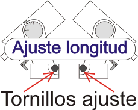

www.Astronovel.github.io
|
|
|
|
www.Astronovel.github.io |
|
|
|
|||||||||||||||||||
|
|
|||||||||||||||||||
|
Estacionar un telescopio |
|||||||||||||||||||
| No
es mas que posicionar el telescopio. En función del tipo de montura que
tengamos, la tarea puede ser mas a menos engorrosa, así para una montura
altazimutal o Dobson, la tarea es sencilla, de echo solo que este bien
nivelada la montura.
La tarea se "complica mas" con una montura ecuatorial ya que aparte de estar bien nivelada, tendremos que ajustar el eje de Latitud, el de Longitud ... Y será esta, la que explicare como ponerla en posición optima, para sacarle el mejor rendimiento (estacionar) Esta tarea a de ser cuanto mas minuciosa cuanto mayor aumento nos proporcione el telescopio y mayor tiempo queramos mantener un objeto en campo visual. |
|||||||||||||||||||
| Pero antes de nada se necesitan unos conocimientos básicos: | |||||||||||||||||||
|
|
Uno poco de geografía: | ||||||||||||||||||
| Puntos cardinales: | |||||||||||||||||||
| El Norte (N), como encontrar el Norte; la parte mas húmeda de los árboles siempre indica el Norte, un reloj de los de agujas, apuntas la aguja que marca las horas hacia el Sol y las 6 marcara el Norte. | |||||||||||||||||||
| El Sur (S) como encontrar el Sur; la parte mas seca de los árboles siempre indica el sur, un reloj de los de agujas, apuntas la aguja que marca las horas hacia el Sol y las 12 marcara el Sur, hormigueros la inclinación de su apertura es hacia el Sur. | |||||||||||||||||||
| El Este (E) como encontrar el Este; por donde sale el Sol. | |||||||||||||||||||
| El Oeste (O) ó (W) como encontrar el Oeste; por donde se pone el Sol. | |||||||||||||||||||
| Parece complicado, pues la mejor solución una brújula, aunque solo se necesita en principio, una aproximación, ya que con lo que tenemos que orientar la montura, es con el Polo Norte celeste y no con el magnético. | |||||||||||||||||||
|
Longitud, son las líneas imaginarias que van de polo a polo ( de Norte a Sur), también llamadas meridianos. Por razones históricas, el meridiano que pasa por el Real Observatorio Astronómico de Greenwich (Inglaterra) se ha escogido como longitud 0º. Las longitudes se miden desde 0º a 180° Este y de 0º a 180° Oeste a partir del meridiano de Greenwich, También nos indica la franja horaria, ya que cada 15º corresponde a una hora . |
|
||||||||||||||||||
|
|
Latitud, son las líneas imaginarias, que cortan la esfera terrestre en un plano perpendicular al eje de rotación, también denominado paralelos. El plano que corta la tierra en dos partes iguales se denomina Ecuador, Dividiendo a esta en dos hemisferios el Norte y el Sur, Se mide 0º a 90º , siendo el ecuador la cota 0º y los polos la cota 90º, para diferenciar entre una cota del hemisferio norte o sur se agrega a la cota N para el h. Norte y S para el h. Sur, luego para referirnos a un punto situado en el hemisferio norte tendríamos que poner 37º N |
||||||||||||||||||
|
Conociendo las medidas de la tierra resulta que 1º de longitud equivale
a unos 113 km en el ecuador ( Conforme nos vamos acercando a los polos esta distancia va
disminuyendo ) y que 1º de latitud a unos 111 km ( Esta
distancia siempre es la misma). Solo usar grados queda muy indeterminada
una posición, para ello se
divide el grado en minutos y segundos.
Un grado (1º) es
igual a 60 minutos (60’) y un minuto
es igual a 60 segundos (60’’), Ojo los minutos y segundos están
en sexagesimal. Por tanto el formato correcto seria, por ejemplo: 37º 37’ 37’’ N
(
Longitud ) 4º 37’ 37’’
O ( Latitud ) 37º 37’ N
4º 37’ O (
Un poco
menos precisa pero valido también ) 37’ 627º N 4’627 O ( También se puede expresar en decimal los minutos y segundo, en algunos mapas lo podéis encontrar así.) |
|||||||||||||||||||
|
Convertir
sexagesimal a decimal. Grados = grado + (minutos / 60) + (segundos / 3600) Ejemplo 37º +
(37’/60=0.616666) + (37’’/3600= .0102) Grados = 37+0.6166+0.0102=37’6268º
|
|||||||||||||||||||
|
Convertir
decimal a sexagesimal. Grados = grados. Minutos = la parte decimal x 60. Segundos = la parte decimal
x 60. Ejemplo: 37’627 º = Grados = 37º minutos = 0.627 X 60 = 37.620 = 37’ ( no ponemos los decimales) segundos = 0.620 x 60 =37,2 = 37 ‘’ Resultado= 37º37’’37’’ O también 37º37’37,2’’
|
|||||||||||||||||||
|
Ascensión
Recta (RA) Serian como los meridianos
terrestres (longitud ), con la salvedad que
los grados están convertidos a horas, una hora equivale a 15º. Empieza
a medirse desde el Este en el equinoccio de primavera.
|
|
||||||||||||||||||
|
Declinación
(Dec) Serian comparable a los paralelos terrestres ( latitud ). Un objeto en el ecuador celeste tiene una
Dec de 0°. Un objeto sobre el hemisferio norte celeste tiene una
Dec de 0º a +90°.
Un objeto sobre el hemisferio sur celeste tiene una
Dec de 0º a −90°. |
|||||||||||||||||||
|
Acimut
Es el ángulo medido sobre el horizonte que forman el un punto cardinal y
la proyección vertical del astro sobre el horizonte. Se mide en grados
desde el Norte en sentido: Norte-Este-Sur-Oeste, correspondiéndoles los
valores (en grados) de: Norte 0º, Este 90º, Sur 180º, Oeste 270º. Altitud Es el ángulo medido en altura sobre el horizonte, se mide de 0º a 90º
a partir del horizonte, y tiene signo positivo para los astros situados
por encima del horizonte y signo negativo para los situados por debajo del
mismo |
|
||||||||||||||||||
|
|
Cenit
o Zenir, es el punto situado en la
vertical del observador. Nadir, es el punto opuesto, es decir a 180º del cenit. |
||||||||||||||||||
| Sigo, con algunos ajustes que podemos realizar en casa: | |||||||||||||||||||
| Calibrar Buscador Polar de una montura ecuatorial | |||||||||||||||||||
| Normalmente no hace falta calibrar el buscador polar de una montura ecuatorial. Pero no estaría mal verificar y si es necesario calibrar nuestro buscador polar: | |||||||||||||||||||
|
Necesita calibrar
Calibrado
|
Verificar: (La montura ha de estar nivelada) Como la tarea requiere
tiempo y paciencias, recomiendo primero realizar un preajuste durante el día,
mediante un objeto alejado como por ejemplo el pico de una iglesia, el
punto de un poste telefónico, eléctrico, etc. Posicionar el objeto alejado exactamente en el punto medio de
la cruz del buscador polar. Ahora desbloqueamos la palanca
del eje RA, o bien usando el mando, previamente puesto a la máxima velocidad, y
rotamos la montura en 180º (media vuelta). Si el objeto sigue estando exactamente en el punto
medio de la cruz, entonces el buscador polar no necesita ninguna
calibración. Pero si se desplaza debemos calibrar nuestro
buscador polar. Aunque no se haya desplazado seria interesante hacer de nuevo
la verificación con la estrella polar. |
||||||||||||||||||
|
Calibrar:
El buscador polar tiene 3 tornillos. Para
calibrar el retículo del buscador y desplazar nuestra objeto hacia el
punto medio de la cruz. Haremos
lo mismo que para la verificación. ( Poner el objeto exactamente en el punto medio de
la cruz ). Ahora
se realizan pequeños ajustes mediante los 3
tornillos que sujetan el retículo del buscador polar y devolver el objeto hasta la mitad del trayecto recorrido.
Girar ahora el eje
RA de nuevo 180º pero a la inversa, mover los ejes de Latitud y Longitud.
hasta situar el objeto de nuevo en la cruz. Repetir las veces que sean
necesarias hasta que el objeto quede estacionario en el punto medio de la
cruz. |
|
||||||||||||||||||
| Una vez calibrado el buscador polar, poner los contrapesos y el telescopio en la montura y hacer casi lo mismo, pero ahora miraríar por el ocular (el que nos diera mas aumentos) del telescopio. Y ajustaríamos con los 6 tornillo ( 2 de ajustes y 1 de bloqueo para la parte delantera y lo mismo para la trasera) que unen la cola de milano con el telescopio, o con las anillas porta telescopio, según tipo anclaje del telescopio. Centrar un objeto en el ocular del buscador polar y el mismo en el ocular del telescopio, actuar en los tornillos hasta poner el objeto en el centro, y como en el calibrado del buscador ir rotando el eje RA180º ajustando, hasta mantener en el centro el objeto en todo su recorrido. | |||||||||||||||||||
|
|
|
||||||||||||||||||
| Y lo mismo para el buscador del telescopio, con la salvedad que aquí no haría falta rotar lo único que el objeto, tanto en el ocular del telescopio como en el del buscador quede centrado. El buscador va anclado también al telescopio con un porta buscador, el cual también dispone de tornillos de ajustes. | |||||||||||||||||||
| Estacionar una montura ecuatorial: | |||||||||||||||||||
|
- Lo primero, no perder el norte. Es aconsejable empezar a montar el equipo antes de que se haga de noche, se ve mejor y evitamos molestar a otros que ya estén observando. En el supuesto que ya sea de noche, aun si se esta solo (se tiene que ir adaptando la pupila a la oscuridad), se ha de usar una linterna o cualquier otro dispositivo luminoso, de luz roja. Una vez localizado aproximadamente el Norte. - Segundo nivelar la montura, (observar el terreno, ha de ser compacto, si el terreno se viera que al montar todo, alguna de las patas del trípode, pudiera hundirse con el peso, todo el tiempo empleado para nivelar la montura no nos serviría de nada. Una buena opción seria apoyar las patas del trípode sobre unos tacos de madera,... La montura a de quedar firme. Las monturas suelen traer un nivel de burbuja, En mi caso dicho nivel estaba mal posicionado, es decir que no me valía para nivel. Lo mejor usar un buen nivel. Como nivelar correctamente la montura usando un nivel: - De las tres patas de la montura una, será la maestra, a esta no se toca ( por ejemplo, esta va ha ser la que mire al norte ), se jugara con las otras dos, Apoyar el nivel sobre la base donde va la montura, dirección N a S y luego E a O y observar el desplazamiento de la burbuja del nivel. Que la burbuja no se desplaza y se mantiene entre las líneas de nivel, no hacer nada, esta nivelada. - La burbuja se desplaza para el S, tienes que bajar las otras patas. ( Si tienes que extender del todo el trípode o dejarlo lo mas bajo posible, deja siempre un poco de margen para poder actuar sobre las patas, en caso casi seguro que tengas que subir o bajar para nivelar ). Una vez metida la burbuja entre las líneas de nivel. Pasamos a la otra dirección. - E a O se desplaza la burbuja al E tienes que bajar la pata de la izquierda ( si estas mirando al N y/o subir la de la derecha ). Obviamente si se desplazara la burbuja al O tendrías que bajar la pata de la derecha y/o subir la de la izquierda.. - Se vuelve a comprobar N a S, si la burbuja esta entre líneas de nivel, esta nivelada, si no volver a ajustar las patas del trípode como antes se ha descrito. - Una vez nivelado el trípode se monta la montura, si la burbuja del nivel de la montura esta centrada el nivel que lleva la montura te puede valer para futuras puesta a nivel del trípode montura, si no es así, el nivel de tu montura esta mal posicionado. Con lo cual tendrías que ajustar el nivel (pero ese es otro tema). Aparte el nivel de la montura suele ser pequeñito, siendo poco exacto. Aunque para visual te puede valer. |
|
||||||||||||||||||
|
|
- Una vez nivelada la montura aproximar el eje de latitud , lo mas próximo a la latitud de tu situación, para ello las monturas suelen tener una escala graduada en uno de sus lados, generalmente de 0 a 90. Por ejemplo si te encuentras en Jaén esta seria 37º, Entonces pondrías la marca de la escala graduada entorno a los 37º. El ajuste de la longitud se realiza con los dos tornillos uno situado en la parte trasera y el otro en la parte delantera de la montura.
|
||||||||||||||||||
- Ahora aproximar el eje de longitud , lo mas próximo al Norte, al celeste, no al magnético. - Ya solo queda esperar que se vea la estrella Polar, para terminar de ajustar la montura y dar por terminado el estacionamiento.
|
 |
||||||||||||||||||
|
|
- Ya se ve la estrella Polar, mirar por el ocular del buscador polar e identificar a esta. No todos los retículos de los buscadores son lo mismo, lo único en común es que todos marcan el Norte celeste (NCP la cruz), y una gran mayoría el circulo que corresponde a las posición en la que se encuentra a lo largo del día la estrella Polar
(circulo rojo (ponga el ratón sobre la
imagen)). En el circulito verde es el punto donde ha de coincidir con la estrella Polar, actuando sobre los tornillos de ajuste de longitud y latitud. Algunos buscadores indican la posición de una constelación o de varias, para ayudar a localizar la estrella Polar ( esta posición suele ser la que vemos en el cielo directamente, no tal como la veríamos en el buscador (recordar la imagen en buscadores, telescopio, la vemos invertida)). |
||||||||||||||||||
| -
Usar como referencia el retículo no daría una poción aproximada, la posición
que he dibujado corresponde al día 01/11/20XX, a las 0h00'00'' UTC sobre
el meridiano de Greenwich (0º), la estrella polar estaría realmente
sobre el NCP (recordar la imagen en buscadores, telescopio, la vemos
invertida).
- Las monturas ecuatoriales todas llevan como mínimo dos aritos graduados uno para el eje Dec (declinación) y otro RA (ascensión recta), ahora solo nos interesa este ultimo. |
|||||||||||||||||||
|
|
-
Rotar el eje RA hasta ver lo que he dibujado, es decir partir desde el día
01.11.20XX a las 0h UTC.( para facilitar esto, esta posición
la podemos tener ya marcada, desde casa usando por ejemplo la esquina de
un edificio, la haríamos coincidir con la línea vertical de la cruz del
buscador, con un lápiz que contraste con el color de la montura, en la
parte móvil del eje RA, traza una rayita en línea con la marca ( |
||||||||||||||||||
| - Como saber el ángulo horario, si la montura esta motorizada y con sistema goto. Poner los datos que pide tales como longitud, latitud, fecha, hora.., una vez terminada de la configuración te da el ángulo horario, Ej.: HA=3h20', rotar el eje RA hasta que la marca coincida con las 3h20', el aro graduado puede tener dos escala una con horas en positivo = 22 - 23 - 0 - 1 - 2 ... y la otra en negativo = 2 - 1 - 0 - 23 - 22 ... Una coresponde al hemisferio Norte y la otra para el hemisferio Sur. Si observas las estrellas, " va rotando" entorno al NCP en sentido contrario a las agujas del reloj, al igual que cualquier constelación... el movimiento es negativo y como lógicamente estas en el hemisferio Norte. Hay monturas que en el aro, esta en la parte superior el horario positivo y el negativo en la inferior, e incluso en el manual te pone que el horario superior es para el hemisferio norte, no le hagas caso, guíate por el negativo este en la parte superior o inferior. Rotar el eje RA en sentido antihorario hasta las 3h20', y bloque el eje RA | |||||||||||||||||||
| -
Actuar para desplazar los ejes tanto el de longitud, como el de latitud,
para lleva el circulito "verde" hasta centrarlo con la estrella
Polar.
Ya se puede desbloquear el eje RA, montar los contrapesos, telescopio... "el telescopio esta estacionado", quedarían unos detalles que expondré después. |
|
||||||||||||||||||
| Antes, no todas las monturas son motorizadas con goto, y para los que no la tienen, como saber el HA, tienes un ordenador instala una cartas celestes, por ejemplo Cartes du Ciel, es gratuito, en español, actualizable.., (en la pagina inicio tienes enlaces a paginas de programas relacionados con la astronomía), también. Configura para el lugar (longitud y latitud) donde se va a estacionar el telescopio (Observatorio en el caso del Cartes), fecha (02/02/20xx), hora (20H00') selecciona la estrella Polar y con el botón derecho, identificar objetos cercanos, se abre una ventanita donde da muchos datos uno de esos dato es el ángulo horario (HA) = 3h00' correspondería a las 20h00'. Que para las 19h30' esta todo dispuesto a falta poner el HA = 2h30' ( 19h30' HA = 2h30' ) ojo la hora UTC no la local, tanto en la carta como en la montura. | |||||||||||||||||||
| Sin ordenador, pues entonces hacer cuentas: | |||||||||||||||||||
| 1º - La longitud de la posición del telescopio Ej.= 4º30' O | |||||||||||||||||||
| 4º30'
(pasar a decimal los minutos)= 4.5 * 4'(minutos
horario)= 18' como es al Oeste de meridiano 0º
>> -18'
(4' = 15º es igual a 1 hora = 60' (minutos), 1º = ( 60 / 15 ) = 4) |
|||||||||||||||||||
| 2º - Los días transcurridos desde el 01-11 hasta el día en curso. | |||||||||||||||||||
| hasta
el 02-02-20XX >> 30 de nov + 31 dic + 31 ene + 2 feb = 94
94 * 3.94'(minutos) = 370.36' = 370.36/60 = 9.91h = 9h54.6' ( 3.94' = 24h / 365 días * 60 ) |
|||||||||||||||||||
| 3º - Sumar los minutos de diferencia de la longitud 9h54' + ( - 0h18')= 9h36' ya tenemos el HA para el 02-02 a las 24h | |||||||||||||||||||
| 4º - Si todo esta dispuesto a falta del HA a las 20h00 >> 24h00' - 20h00'= 4h00' >> 9h54' - 4h00' = 5h54' de HA y si fuera ya el 03-02 a las 1h00' >> 9h54' + 1h00' = 10h54' de HA | |||||||||||||||||||
|
Ya queda menos |
|||||||||||||||||||
| En el caso de ser el telescopio motorizado con goto, alinear con 1, 2 o 3 estrellas (con 3 estrella mas precisión)(esto también hay que hacerse en monturas altazimutales o dobson motorizadas con sistema goto), para ello ir siguiendo los pasos que te da el propio mando. Para mayor precisión, para fotografía, se podría utilizar otros métodos de estacionamiento como por ejemplo el de la deriva pero este será otra historia. | |||||||||||||||||||
| Y en el caso de que sea el telescopio solo motorizado sin goto, o manual tendremos que usar los aros graduados tanto el de DEC como RA como guía para localizar objetos. Pero esta también será otra historia. | |||||||||||||||||||
|
Unos detalles antes de salir a observar |
|||||||||||||||||||
|
No es solo coger el telescopio y a mirar. Para aprovechar al máximo y
pasar un buen rato: 1º - Un sitio lejos de núcleos urbanos y de contaminación lumínica. 2º - Con una buena altitud, cuanto mas altitud mucho mejor, para evitar la contaminación atmosférica. 3º - Apartados de embalses, ríos o humedad, la humedad empañan las lentes o espejos. 4º - Por las noches suelen hacer frío incluso en verano y sobre todo en altitud. Llevar siempre ropa de abrigo, incluso en verano. 5º - Algo de comida,.. 6º - Es imprescindible linterna con luz roja. Para la observación de cielo profundo, la pupila se dilata para conseguir captar la mayor cantidad de luz, pero tarda en acostumbrarse a la oscuridad. Cuando se usa luz blanca, la pupila se contrae rápidamente. La luz roja no afecta a la pupila. 7º - Una carta celeste para saber qué objetos serán visibles y su posición. O un planisferio celeste, aunque en estos no suelen están los planetas ni la Luna. 8º - Baterías cargada, si la montura es motorizada. 9º - Revisarlo todo lo necesario antes de salir a observar, trípode, montura, contrapeso, linterna, brújula, nivel... Mas detalles : - Para observar la Luna cualquier día, menos en luna llena, al estar iluminada toda no se nota el relieve y tanta luz molesta. Los mejores días en cuarto creciente o cuarto menguante, debiendo apuntar al terminador (la sombra sobre la superficie lunar). - Para observación planetaria vale cualquier día, si es visible el planeta,... Para observarlos bien usar filtro de color. Para observar objetos de cielo profundo con luna nueva o próxima la misma. No debemos mirarlos directamente para apreciar los detalles. La parte central del ojo no es efectiva en la oscuridad (detecta sobretodo los colores). - Para la observación de lluvias de meteoros no es necesario llevar telescopio.
|
|||||||||||||||||||
 |
Con telescopio o prismáticos jamás se debe de mirar directamente al sol. Solo con los filtros especiales para estos.
O telescopios específicos para el Sol |
 |
|||||||||||||||||
|
|
|||||||||||||||||||